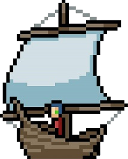

Quest 1 :
Découvrir l'univers du Développement Web avec HTML & CSS.
Quest terminée !
Alexis a obtenu...
... une ÉPÉE DE CHEVALIER ! (+50 points d'ATTAQUE)
Quest 2 :
Le versioning avec Git & GitHub.
Quest terminée !
Alexis a obtenu...
... une ARMURE DE CHEVALIER ! (+50 points de DÉFENSE)
Secret Quest 1 :
Manipuler ses fichiers avec le Shell.
Quest terminée !
Alexis a obtenu...
... une CARTE-PORTULAN ! (+10 points d'INTELLIGENCE)
Secret Quest 2 :
L'ancêtre, le C !
Quest terminée !
Alexis a obtenu...
... une MEDAILLE ! (+100 points de RESPECT)
Quest 3 :
Se simplifier le CSS avec SASS.
Quest 4 :
La vie est facile avec le Framework CSS, Bootstrap.
Quest 5 :
Améliorer son référencement sur les moteurs de recherche. (SEO)
Quest 6 :
JavaScript, de la programmation algorithmique !
Quest 7 :
TypeScript, le JavaScript orienté objet.
Quest 8 :
L'ancien Framework JavaScript populaire, jQuery.
Quest 9 :
Les applications web complexes avec React.js.
Quest 10 :
Concevoir des applications web One-Page avec Angular.js.
Quest 11 :
Devenir un couteau suisse avec Vue.js.
Quest 12 :
Prendre des notions de Back-end avec PHP.
Quest 13 :
Gérer des bases de données avec MySQL.
Quest 14 :
Créer une application Back-end avec Node.js & Express.js.
Quest 15 :
Le monde du NoSQL avec MongoDB.
Quest 16 :
Découvrir la magie des CMS avec WordPress.
